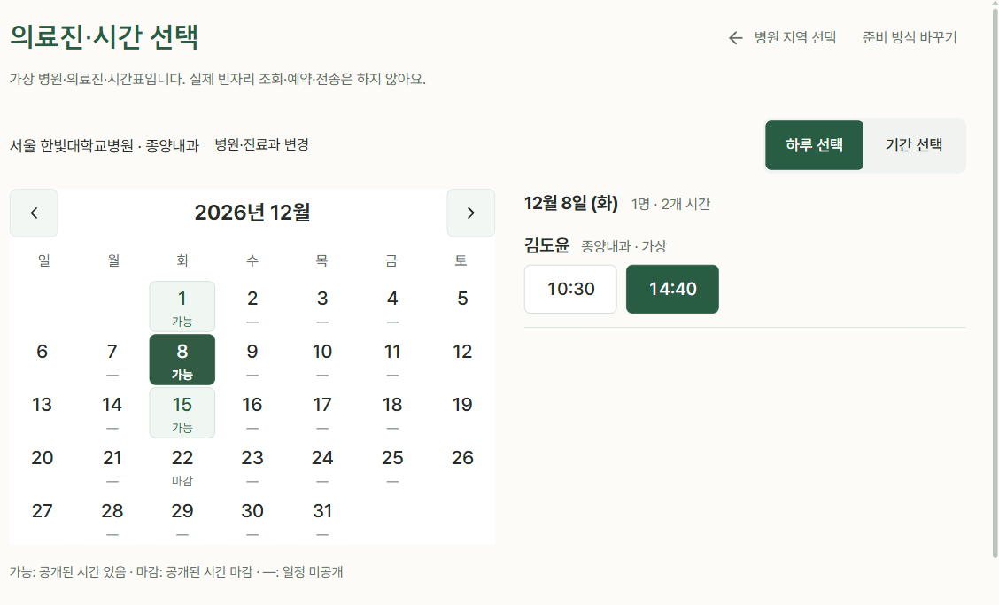
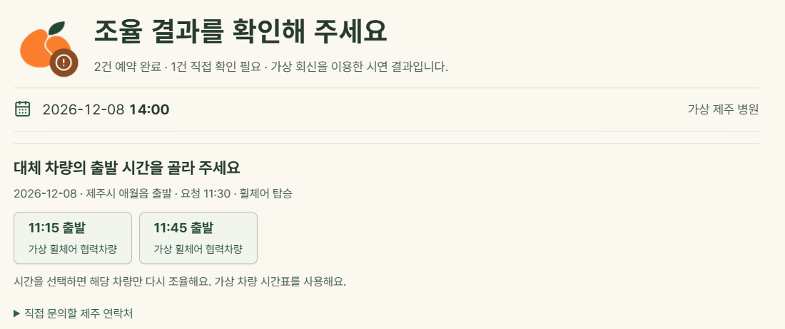

혼디는 떨어져 사는 가족이 부모님의 진료와 오가는 길을 함께 준비하는 AI 비서입니다. 제주에서 진료받는 날에는 집 앞에 올 차와 병원 동행을 알아봅니다. 내륙으로 가는 날에는 공항까지 갈 길과 왕복 항공편을 살피고, 검사 일정에 따라 하룻밤 묵어야 할지도 함께 챙깁니다.
혼디 · AI Agent 기획서제주 가족에게 필요한 이유
진료는 한 번인데, 가족이 맞출 약속은 여러 개입니다
평일에 제주로 내려가기 어려운 딸은 어머니와 통화한 뒤 병원과 이동 지원 창구에 따로 연락해야 합니다. 어디에서 진료받느냐에 따라 딸이 물어볼 곳도 달라집니다.
제주에서 진료받는 날
어머니가 휠체어에서 차로 옮겨 타기 어렵다면 일반 콜택시 번호만 알아서는 출발 시각을 정할 수 없습니다. 휠체어에 앉은 채 탈 차가 집까지 오는지, 병원에 도착하면 누가 접수를 도울지 확인해야 합니다.
내륙으로 진료받으러 가는 날
딸은 병원에 초진 접수와 진료의뢰서 제출 방법을 묻고, 제주공항까지 갈 차와 김포에서 마중 나갈 시간을 맞춥니다. 검사가 이튿날로 잡히면 돌아올 비행기와 그날 밤 묵을 곳까지 다시 알아봐야 합니다.
보호자의 요청 예시“엄마가 애월에서 출발하세요. 서울 병원은 12월 초 오후가 좋고, 김포공항엔 제가 나갈게요. 제주공항까지 휠체어에 탄 채 갈 수 있는 차가 필요해요.”
어머니 댁에서 다시 집으로 돌아오기까지
애월 집 → 제주공항승차 시각과 탈 차량
제주 → 김포항공편과 탑승 지원
김포공항 → 병원가족 마중 또는 동행
병원 → 귀가당일 귀가 또는 1박
아는 것부터 말해도 됩니다
딸이 말이나 글로 요청하면 혼디는 애월에서 출발한다는 점과 휠체어 차량이 필요하다는 점을 일정에 옮깁니다. 딸은 화면에서 내용을 확인하고, 날짜나 진료과가 비어 있으면 그 항목만 눌러 채웁니다.
병원은 진료 시각을, 항공사는 비행 시각을 알려줍니다. 그사이 어머니가 누구와 어떻게 이동할지는 가족이 맞춰야 합니다. 제주도도 도외 진료에 따르는 불편과 비용 부담을 줄이는 일을 보건정책 과제로 꼽았습니다.
“차도 알아봐 줘”라는 말만으로는 어느 기관에 무엇을 물을지 정하기 어렵습니다. 혼디는 앞서 정한 방문을 읽고, 빠진 조건이 있으면 한 가지씩 되묻습니다.
보호자 요청 → 모델이 도구 선택 → 서버가 권한과 입력 확인 → 자료 조회 → 답변과 남은 일
모델과 서버의 역할
자유 대화에는 OpenAI Responses API의 gpt-6.1-sol을 쓰고 추론 강도는 medium으로 두었습니다. 모델은 요청을 해석하고 다음 도구를 고릅니다. 서버는 대상 기관과 보호자가 허용한 범위를 확인한 뒤 결과를 기록합니다.
analyze_public_data
지역과 이동 조건에 맞는 등록자료를 읽고, 출처와 기준일을 돌려줍니다.
find_support
이 방문에 필요한 차량·동행 문의처와 아직 확인할 사항을 찾습니다.
prepare_inquiries
선택한 기관에 물을 질문을 만듭니다. 문의 대상이 바뀌면 새 대상과 전달 범위를 다시 확인합니다.
말하다가 조건을 고칠 수도 있습니다
브라우저 음성은 WebRTC로 gpt-realtime-2.1에 연결합니다. 한국어 전사에는 gpt-4o-mini-transcribe를 씁니다. 보호자가 대답 도중 “화요일 말고 수요일이요”라고 끼어들면 대화를 이어가며 화면의 조건을 확인할 수 있습니다.
모델에는 자료 출처를 밝히고 모르는 조건을 묻도록 지시했습니다. 기관이 본인 확인을 요청하거나 AI 응대를 거절하면 가족에게 넘깁니다. 첫 글 입력과 월간 달력, 예약 시연은 로컬 규칙으로도 실행됩니다.
센터 기준 PC는 Core i7-8700, 메모리 32GB, GTX 1060 사양입니다. 언어·음성 모델은 OpenAI 서버에서 실행하며, 앱 설치와 빌드는 별도 Windows PC에서 확인했습니다. 개발 도구와 모델 호출 한도는 제출 ZIP의 README.md에 적었습니다.
혼디 · AI Agent 기획서내륙 진료와 왕복 일정
오후 2시 40분 진료, 돌아오는 비행기는?
내륙 병원에서 받을 진료는 월간 달력으로 준비합니다. 하루나 희망 기간을 고르면 그 안의 의료진과 시간대가 보입니다. 빈 시간이 없으면 병원에 상담할 메모를 남길 수 있습니다.

내륙 병원 시연 화면. 12월 8일에 가능한 가상 시간 두 개 중 14:40을 고른 모습입니다.
의뢰서와 항공편을 같은 일정에서 챙깁니다
상급종합병원에 처음 간다면 병원에 묻습니다. “진료의뢰서가 필요한가요? 어디에 내면 되나요?” 집에서 제주공항까지, 도착 공항에서 병원까지 탈 차도 살핍니다. 혼디에서 출발일을 고르면 항공 가격 비교 사이트가 그 날짜로 열립니다. 좌석 확인과 구매는 그곳에서 합니다.
검사가 하루 밀리면 숙박도 일정에 넣습니다
지금은 ‘당일 귀가’와 ‘숙박 또는 다른 날 귀가’ 중 가족의 계획을 기록합니다. 다음 날 검사가 잡힌다면 병원 근처에서 하룻밤 묵고 귀가편을 다시 잡을 수 있습니다. 실제 객실 조회·예약은 숙소와 협력해 추가할 기능입니다.
혼디 · AI Agent 기획서제주 진료와 차량 변경
차량 한 대만 다시 알아보면 되는 날
애월에서 오후 두 시 정형외과에 가는 가상 사례입니다. 병원과 동행은 가능하다고 답했지만, 오전 11시 30분에 부탁한 휠체어 차량은 오기 어렵다는 회신이 들어왔습니다.

제주우리병원은 공개 등록자료에서 고른 문의 대상입니다. 화면의 가능 시간과 회신은 가상 창구에서 보냈습니다.
맡긴 일
첫 회신
보호자가 11:15 차량을 고른 뒤
병원
14:00 진료 가능
기존 회신 유지
휠체어 차량
11:30 출발 어려움
차량만 11:15로 다시 조율
병원 동행
13:30 병원에서 만남
기존 약속 시각 유지
이때 딸에게 남은 결정은 출발을 15분 앞당길 수 있는지였습니다. 11시 15분 차를 고르자 이미 답을 받은 병원과 동행 약속은 그대로 남았습니다. 딸은 내 예약 현황에서 달라진 시간을 확인하고 어머니께 전할 일정표를 저장할 수 있습니다.
혼디 · AI Agent 기획서기관 협의와 운영 계획
전화로 물을 때와 기관에 바로 요청할 때
가족이 기다리는 답은 “그날 그 시각에 모시러 갈 수 있습니다”라는 한마디입니다. 전화로 받는 곳에는 혼디가 대신 묻고, 전산 접수가 되는 곳에는 신청을 바로 보내는 방식을 제안합니다.
전화로 접수하는 곳
운영자용 코드에는 Twilio로 전화를 걸고 통화 음성을 OpenAI Realtime과 주고받는 경로를 마련했습니다. 시험은 모의 통화로 진행했습니다. 실제로 쓰려면 먼저 환자가 어느 기관에 어떤 문의를 맡길지 정해야 합니다. 기관과는 전화를 받을 번호와 시간, AI임을 알리는 방법, 통화 정보 처리 방식을 합의해야 합니다. 그 협의를 마칠 때까지 시연에서는 가상 창구가 답합니다.
운영 단계에서는 동의한 병원이나 택시 창구에 AI가 먼저 문의하고, 담당자가 나중에 걸어온 전화도 받아 원래 요청에 연결하는 방식을 제안합니다. 수신 전화 응대는 후속 개발 항목입니다.
시스템으로 접수할 수 있는 곳
협력 기관이 허용한 API를 MCP(Model Context Protocol) 도구로 연결하는 방안입니다. 택시 업체와 승차 위치, 희망 시각, 휠체어 탑승 방식을 보내기로 정하면 혼디가 그 항목만 전송합니다. 가족이 대체 시각을 고르면 혼디가 변경을 요청합니다. 업체가 신청을 받았을 때는 ‘접수’, 차량과 시각을 확정했을 때는 ‘예약 확정’으로 표시할 계획입니다.
공공기관과 시범 운영을 시작한다면
제주도와 공항 운영기관에 협력을 제안하고, 실제 접수를 맡을 곳마다 신청 항목과 변경·취소 권한을 정할 계획입니다.